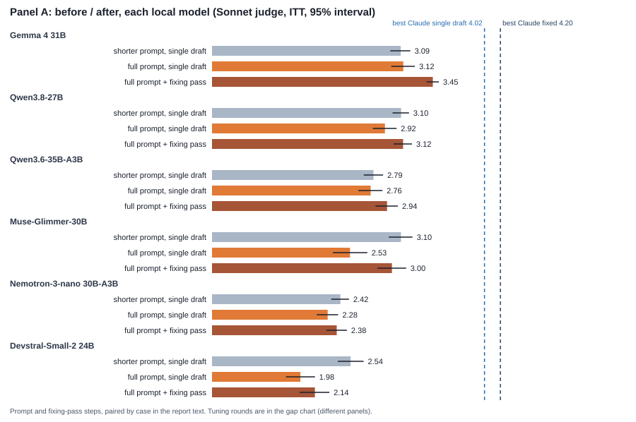
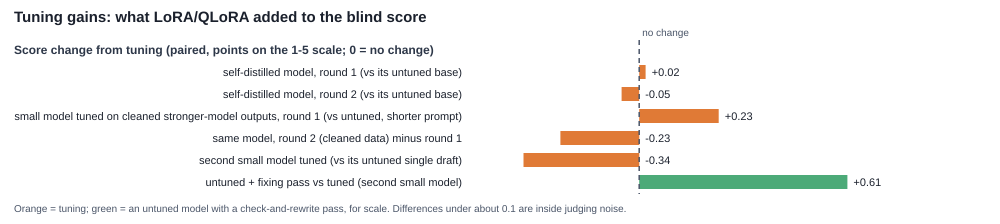
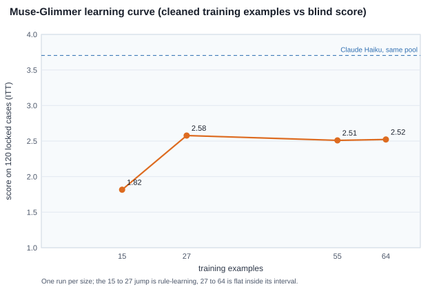
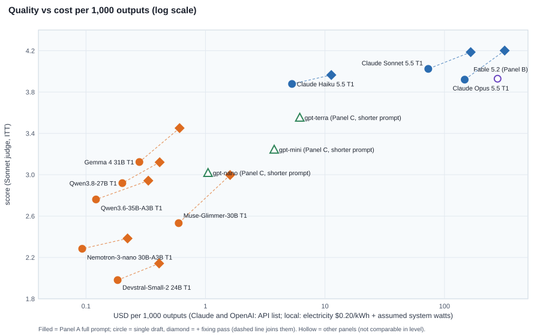
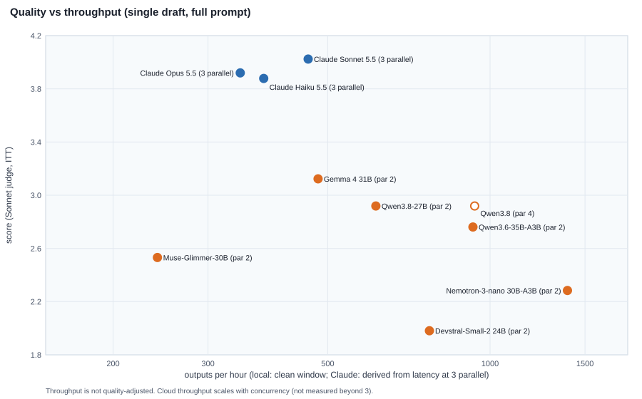

The best local writer reached 82% of the top score, at a fraction of a cent per output.
A writing task needed a model that turns a set of structured facts and a reader's goal into a short, personalised advisory note: about 150 words, one title, one paragraph, one concrete closing action. I compared hosted and local models on quality, cost and speed, and tested how far prompting, a fixing pass and LoRA tuning could lift the local ones.
Short version: the three hosted Claude models led and overlapped one another. The best local model (Gemma 4 31B with a fixing pass) scored 3.45 against 4.20 for the top hosted setup, for $0.61 per 1,000 outputs in electricity. The fixing pass helped every model; LoRA tuning taught the output rules but did not raise quality. Scores come from an AI judge that has not yet been checked against human picks.
120fabricated test cases, sealed by hash before any model ran
9writer models in the headline panel: 3 hosted, 6 local
6rubric dimensions, scored 1 to 5 by an AI judge
1consumer GPU (RTX 5090) for every local model
00 / THE QUESTION
Which writer, at what cost?
Hosted models are strong and paid per token. Local models are nearly free to run and keep every input on the machine, but are they good enough? And can prompting, a second pass or fine-tuning close the gap?
THE TASK
A short advisory note
From structured facts and a reader's goal, write about 150 words: one title, one paragraph, one concrete closing action. 120 fabricated cases across eleven scenario categories. Every model got the same long prompt (about 14,000 tokens); local models were also run on a shorter one (about 4,000 tokens).
TWO TRACKS
Draft, or draft and fix
Single draft: one call. Draft + fixing pass: the same model checks its draft against the supplied facts and rewrites it, at most two rounds, and the rewrite is kept only if the number of faults falls.
THE JUDGE
An AI reviewer, blind
Claude Sonnet scored each note 1 to 5 on six dimensions: task fit, faithfulness to the supplied facts, insight, specificity, fluency and epistemic care. Sets mixed models, label order was shuffled, and planted control notes (shuffled, from another case, duplicated) checked the judge.
These are AI-judge scores, not measured accuracy. The headline judge passed the planted-control check. A second, local judge failed it (it rewarded scrambled text) and is not used for any number here. Anchoring the judge to 50 blind human picks is pending. Failed or hard-failed outputs score 1 on every dimension (intention to treat). Intervals are 95% case-cluster bootstrap.
01 / QUALITY · PANEL A
Hosted led, and overlapped.
Panel A is the headline run: full prompt, all 120 cases, both tracks. Hosted models had one draw per case, local models two, so their intervals are not the same kind of evidence.
Score with the fixing pass, full prompt (Panel A)
AI judge (Claude Sonnet), 1 to 5 scale. Each model's best Panel A setup.
Claude Opus 5.5hosted4.20
Claude Sonnet 5.5hosted4.19
Claude Haiku 5.5hosted3.96
Gemma 4 31Blocal GPU3.45
Qwen3.8-27Blocal GPU3.12
Muse-Glimmer-30Blocal GPU3.00
Qwen3.6-35B-A3Blocal GPU2.94
Nemotron-3-nano 30B-A3Blocal GPU2.38
Devstral-Small-2 24Blocal GPU2.14
Panel A scores by model, full prompt, with 95% intervals and hard-fail rates
Model (Panel A, full prompt)
Route
Draws per case
Single draft
95%
Draft + fixing pass
95%
Hard-fail, single
Hard-fail, with pass
Claude Opus 5.5
hosted
1
3.92
[3.73, 4.09]
4.20
[4.09, 4.30]
0.100
0.025
Claude Sonnet 5.5
hosted
1
4.02
[3.85, 4.18]
4.19
[4.06, 4.29]
0.075
0.033
Claude Haiku 5.5
hosted
1
3.88
[3.73, 4.02]
3.96
[3.83, 4.08]
0.067
0.042
Gemma 4 31B
local GPU
2
3.12
[2.99, 3.25]
3.45
[3.38, 3.52]
0.158
0.029
Qwen3.8-27B
local GPU
2
2.92
[2.78, 3.05]
3.12
[3.02, 3.22]
0.179
0.113
Muse-Glimmer-30B
local GPU
2
2.53
[2.34, 2.72]
3.00
[2.84, 3.15]
0.425
0.246
Qwen3.6-35B-A3B
local GPU
2
2.76
[2.62, 2.89]
2.94
[2.81, 3.06]
0.208
0.133
Nemotron-3-nano 30B-A3B
local GPU
2
2.28
[2.16, 2.40]
2.38
[2.27, 2.50]
0.258
0.188
Devstral-Small-2 24B
local GPU
2
1.98
[1.82, 2.14]
2.14
[1.97, 2.30]
0.537
0.458
FINDING 01
The hosted three overlap
Claude Sonnet, Opus and Haiku have overlapping intervals. With the fixing pass, Opus (4.20) and Sonnet (4.19) are level.
FINDING 02
The local gap is real
The best local cell (Gemma 4 31B with the fixing pass, 3.45) is 0.75 below the best hosted cell (4.20) and 0.57 below the best hosted single draft (4.02).
FINDING 03
The pass rescues, mostly
The fixing pass raised every model and cut hard failures sharply (Gemma 0.158 to 0.029). Among outputs that were already valid, scores barely moved: it mainly rescued outputs that had broken a rule.
Other panels are kept separate. Panel B, an earlier full-prompt re-run in a separate judging session, added Claude Fable 5.2: it was the top Panel B arm at 3.93, and its interval overlaps Sonnet's and Opus's in that panel. Panel C, an earlier shorter-prompt run on 30 cases, added three OpenAI models. The same Claude model scored up to 0.36 differently between Panels A and B on identical cases (different draws and judge pool), so numbers from different panels are never compared on this page.
Making local models better.
Four levers were tried on the local models: prompt length, the fixing pass, extra pipeline steps, and LoRA or QLoRA tuning. The fixing pass was the only one that lifted every model.
All changes below are paired by case, with 95% intervals. Each table states its panel.

Panel A: each local model on the shorter prompt, the full prompt, and the full prompt with the fixing pass. Reference lines are the best hosted single draft (4.02) and the best hosted cell with the fixing pass (4.20).
Prompt length and the fixing pass (Panel A)
Panel A local models: shorter prompt score, effect of the long prompt, effect of the fixing pass, and score on valid outputs only
Model
Shorter prompt, single draft
Long minus short prompt (single draft)
Fixing pass change (full prompt)
Valid outputs only: single / with pass
Gemma 4 31B
3.09
+0.03 [-0.12, 0.18]
+0.33 [0.22, 0.44]
3.52 / 3.52
Qwen3.8-27B
3.10
-0.18 [-0.34, -0.02]
+0.20 [0.12, 0.29]
3.34 / 3.39
Qwen3.6-35B-A3B
2.79
-0.03 [-0.18, 0.12]
+0.18 [0.10, 0.27]
3.24 / 3.25
Muse-Glimmer-30B
3.10
-0.56 [-0.79, -0.35]
+0.47 [0.34, 0.60]
3.70 / 3.68
Nemotron-3-nano 30B-A3B
2.42
-0.14 [-0.29, 0.01]
+0.10 [0.05, 0.16]
2.80 / 2.77
Devstral-Small-2 24B
2.54
-0.56 [-0.76, -0.35]
+0.16 [0.10, 0.23]
3.12 / 3.11
Claude Sonnet 5.5 (full prompt only)
n/a
n/a
+0.16 [0.06, 0.29]
4.27 / 4.30
Claude Opus 5.5 (full prompt only)
n/a
n/a
+0.28 [0.13, 0.45]
4.25 / 4.28
Claude Haiku 5.5 (full prompt only)
n/a
n/a
+0.09 [0.01, 0.19]
4.08 / 4.09
Other pipeline steps, one local model (Qwen3.8-27B, 71-case secondary set, Panel D)
Panel D: paired effect of extra pipeline steps on Qwen3.8-27B
Step
Paired change (95%)
What it did
Plan first (write a plan, then the text)
-0.168 [-0.273, -0.058]
Worse on this rubric
Strict rule in the prompt against stating feelings as fact
+0.048 [0.005, 0.093]
That fault fell from 76% to about 37% of outputs
Best of 4, picked by a local selector
+0.034 [-0.007, 0.079]
Inside noise, at four times the writing cost
Check-and-rewrite repair
-0.006 [-0.012, -0.001]
Cut the fault where it fired; score unchanged
Every pipeline step together moved the score by about +0.04. None closed the gap to the stronger models.
02 / LORA AND QLORA TUNING · PANELS D AND E
Tuning taught rules, not quality.
Every round was measured. Tuned models were not served live, and each setting is a single run.
Every LoRA and QLoRA tuning round, its training data, result and verdict
Round
Training data
Result (paired change; 95% where measured)
Verdict
Self-distillation, round 1
The model's own best outputs (144, picked by a judge with grade ≥ 4.0), QLoRA r16
+0.02 against the untuned base on the 71-case set
No gain; cut the stated-feelings fault from 79% to 56%
Self-distillation, round 2
382 kept outputs, length filter, 730 new fabricated cases
-0.05 to -0.07 against base (inside the ~0.1 judging noise)
No gain; the picker agreed with itself on only 47% of its choices
Small model A, round 1
61 cleaned outputs of a stronger hosted model
Outputs failing hard rules: 41 of 71 → 10 of 71. Score +0.23 [-0.00, 0.46] against the shorter-prompt base on 120 cases
Rules learnt; quality not raised (among outputs that passed checks: -0.39 against base)
Flat after 27; stock phrases 68% → 24%, over-hedging 44% → 8%, score did not rise
Small model B
96 cleaned outputs
Tuned minus untuned single draft: -0.34 [-0.51, -0.16]. Untuned + fixing pass beat tuned by +0.61
Tuning lost; untuned model plus fixing pass chosen

What tuning added to the score (paired changes). Orange is tuning; green is an untuned model with the fixing pass, for scale. Differences under about 0.1 are inside judging noise.

Learning curve for small model A (Muse-Glimmer-30B): score against the number of training examples. One run per size; the jump from 15 to 27 is rule-learning, and 27 to 64 is flat.
WHAT IT DID
Taught the rules
Tuning taught the output rules (the largest single movement in the study), removed specific habits it was shown, and removed the need for in-prompt examples. Serving an adapter cost about 14% throughput.
WHAT IT DID NOT
Raise blind quality
It did not raise quality beyond what a good prompt plus the fixing pass give. No tuned model came within 0.9 of the best hosted model.
WHY (SUPPORTED)
Too little, too noisy
47 to 96 usable examples is small, and the curve is flat from 27 to 64. The hosted-written examples contained the forbidden stock phrases (44 of 61), and cleaning them did not help. Self-picked data converges on the model's own style, because the picker is noisy (grade correlation 0.33 between two passes).
Where the local gap comes from (Panel A, full prompt, single draft)
Gap decomposition: rule-failure part and quality part
Model
Rule-failure part (valid-only minus all-outputs score)
Quality part (below Sonnet's 4.27 on valid outputs)
Gemma 4 31B
+0.40
0.75
Qwen3.8-27B
+0.42
0.93
Muse-Glimmer-30B
+1.17
0.57
Tuning attacked the first part and did not move the second.
ESTIMATE · NOT A MEASUREMENT
What more data might do. With more of the same data, expect roughly zero gain in score (flat curve, two flat rounds). With several hundred to a few thousand examples written or edited to the target standard by a stronger source, a clean picker and a preference stage (none of which were tested here), a plausible planning range is to recover the rule-failure part and some of the quality part. That would put a 27 to 31B model near its valid-only level of 3.4 to 3.7 on Panel A's scale, still about 0.4 to 0.9 below the best hosted single draft (4.02). Closing to within 0.3 would need a stronger base model, or better-than-own data at scale, and a fresh test.
What it costs.
For N outputs, cost is N times the cost of one. The hosted price depends on tokens; the local price depends on GPU time and your electricity rate.
Running the evaluation itself had no per-call cost: hosted arms ran on a subscription (recorded as usage and priced here at API list rates), and local arms ran on the GPU (electricity).
cost(N) = N × c
Hosted API:c = (input tokens × P_in + output tokens × P_out) / 1,000,000, summed over every call (single draft: 1 call; with the fixing pass: 3.3 to 4.0 calls). Batch tier = 0.5 × list.
Local GPU:c = GPU-seconds per output × (P_gpu + P_system) / 3,600,000 × r + GPU-hours × A
r: electricity rate in USD per kWh, a parameter. The tables use $0.20; at $0.12 multiply local costs by 0.6, at $0.30 by 1.5.
P_gpu: measured card power under load, 414 to 571 W depending on model (4 to 16 W idle).
P_system: an assumed 150 W for the rest of the machine. Wall power was not measured.
A: optional hardware amortisation per GPU-hour, hardware cost / (years × 8,760 × utilisation). Use your own figures. As an illustrative example only, $3,000 over 3 years at 50% use is about $0.23 per GPU-hour; the data files carry this illustrative column separately and it is not included in any cost on this page.
Prices used (USD per million tokens, input / output, standard tier)
Batch is 50% of list for both vendors. Any price after those dates is unverified.
Cost per 1,000 outputs (full prompt)
Cost per 1,000 outputs by model and track
Model
Basis
Single draft, list
Single draft, batch
With fixing pass, list
Claude Haiku 5.5
measured tokens × list price
$5.30
$2.65
$11.30
Claude Sonnet 5.5
measured tokens × list price
$73.20
$36.60
$165.80
Claude Opus 5.5
measured tokens × list price
$147.70
$73.85
$318.80
Claude Fable 5.2
measured tokens × list price
$278.37
$139.18
not run
gpt-5.4-nano
ESTIMATE: quoted token basis; quality at this prompt not measured
$3.38
$1.69
$8.54
gpt-5.4-mini
ESTIMATE: quoted token basis; quality at this prompt not measured
$12.60
$6.30
$31.76
gpt-6.1-terra
ESTIMATE: quoted token basis; quality at this prompt not measured
$17.55
$8.78
$43.88
Gemma 4 31B
electricity, $0.20/kWh, incl. assumed system power
$0.28
n/a
$0.61
Qwen3.8-27B
electricity, $0.20/kWh, incl. assumed system power
$0.20
n/a
$0.41
Qwen3.6-35B-A3B
electricity, $0.20/kWh, incl. assumed system power
$0.12
n/a
$0.33
Muse-Glimmer-30B
electricity, $0.20/kWh, incl. assumed system power
$0.60
n/a
$1.61
Nemotron-3-nano 30B-A3B
electricity, $0.20/kWh, incl. assumed system power
$0.09
n/a
$0.22
Devstral-Small-2 24B
electricity, $0.20/kWh, incl. assumed system power
$0.18
n/a
$0.41
Local costs are derived from a clean timing window with one model alone on the card.
Cost for N outputs
Cost for 1,000 to 1,000,000 outputs by setup
Setup
1,000
10,000
100,000
1,000,000
Claude Haiku 5.5, single draft, API list
$5.30
$53.00
$530
$5,300
Claude Haiku 5.5, single draft, API batch
$2.65
$26.50
$265
$2,650
Claude Sonnet 5.5, single draft, API list
$73.20
$732
$7,320
$73,200
Claude Sonnet 5.5 + fixing pass, API list
$165.80
$1,658
$16,580
$165,800
Claude Opus 5.5, single draft, API list
$147.70
$1,477
$14,770
$147,700
Claude Opus 5.5 + fixing pass, API list
$318.80
$3,188
$31,880
$318,800
Claude Fable 5.2, single draft, API list
$278.37
$2,784
$27,837
$278,366
Gemma 4 31B local, single draft (electricity, $0.20)
$0.28
$2.80
$27.99
$280
Gemma 4 31B local + fixing pass (electricity, $0.20)
$0.61
$6.07
$60.71
$607
Qwen3.8-27B local, single draft (electricity, $0.20)
$0.20
$2.02
$20.16
$202

Score against cost per 1,000 outputs (log scale). Filled points are Panel A (full prompt): circles are single drafts, diamonds add the fixing pass. Hollow points come from other panels and are not comparable in level.
03 / CHEAPEST SETUP PER BAR · PANEL A
Set the bar, then pay for it.
For each quality bar, the cheapest Panel A setup whose point estimate clears it. Differences of 0.1 are inside judging noise.
Cheapest setup that clears each quality bar
Bar
Cheapest setup that clears it
Score
Cost per 1,000
3.0
Qwen3.8-27B, shorter prompt, single draft
3.10
$0.09
3.3
Gemma 4 31B, full prompt, with fixing pass
3.45
$0.61
3.5
Claude Haiku 5.5, full prompt, single draft
3.88
$5.30
3.7
Claude Haiku 5.5, full prompt, single draft
3.88
$5.30
4.0
Claude Sonnet 5.5, full prompt, single draft
4.02
$73.20
4.2
Claude Opus 5.5, full prompt, with fixing pass
4.20
$318.80
No local setup reached 3.5. Hosted costs are API list prices; local costs are electricity at $0.20 per kWh.
Every Panel A setup: score, share of the top cell, cost per 1,000
All Panel A setups with score, percentage of the top cell and cost per 1,000
Setup (full prompt)
Score
% of top cell (4.20)
Cost per 1,000
Claude Opus 5.5, with fixing pass
4.20
100%
$318.80
Claude Sonnet 5.5, with fixing pass
4.19
100%
$165.80
Claude Sonnet 5.5, single draft
4.02
96%
$73.20
Claude Haiku 5.5, with fixing pass
3.96
94%
$11.30
Claude Opus 5.5, single draft
3.92
93%
$147.70
Claude Haiku 5.5, single draft
3.88
92%
$5.30
Gemma 4 31B, with fixing pass
3.45
82%
$0.61
Gemma 4 31B, single draft
3.12
74%
$0.28
Qwen3.8-27B, with fixing pass
3.12
74%
$0.41
Muse-Glimmer-30B, with fixing pass
3.00
71%
$1.61
Qwen3.6-35B-A3B, with fixing pass
2.94
70%
$0.33
Qwen3.8-27B, single draft
2.92
69%
$0.20
Qwen3.6-35B-A3B, single draft
2.76
66%
$0.12
Muse-Glimmer-30B, single draft
2.53
60%
$0.60
Nemotron-3-nano 30B-A3B, with fixing pass
2.38
57%
$0.22
Nemotron-3-nano 30B-A3B, single draft
2.28
54%
$0.09
Devstral-Small-2 24B, with fixing pass
2.14
51%
$0.41
Devstral-Small-2 24B, single draft
1.98
47%
$0.18
How fast.
Nemotron-3-nano and Qwen3.6 were the fastest on the card; the two strongest local models, Gemma 4 and Qwen3.8, ran at 480 and 614 outputs an hour. Hosted calls took 23.5 to 30.5 seconds at the median.
Full prompt, single draft. Hosted latency is dominated by hidden thinking tokens; local latency by the 14,000-token prompt.
Per-call latency and outputs per hour by model
Model
Route / concurrency
Latency p50 / p95 (s)
Outputs per hour
Claude Sonnet 5.5
hosted, 3 parallel
23.5 / 29.0
460 (derived)
Claude Opus 5.5
hosted, 3 parallel
30.5 / 45.5
344 (derived)
Claude Haiku 5.5
hosted, 3 parallel
26.4 / 46.4
380 (derived)
Claude Fable 5.2
hosted, 3 parallel
29.7 / 36.2
362 (derived)
Nemotron-3-nano 30B-A3B
local, 2 parallel
3.5 / 5.5
1,392
Qwen3.6-35B-A3B
local, 2 parallel
5.0 / 7.6
930
Devstral-Small-2 24B
local, 2 parallel
8.9 / 10.8
772
Qwen3.8-27B
local, 2 parallel
12.9 / 18.7
614
Gemma 4 31B
local, 2 parallel
14.8 / 18.4
480
Muse-Glimmer-30B
local, 2 parallel
27.5 / 40.5
242
Qwen3.8-27B
local, 4 parallel
n/a
936

Score against outputs per hour (single draft, full prompt). Throughput is not quality-adjusted; hosted throughput scales with concurrency, which was not measured beyond three.
04 / CAPABILITIES AND TRADEOFFS
Which model, for which job.
Quality is one column. Rule-following, privacy and licence terms decide as much.
Rule-following, measured by code checks (share of outputs)
Hard-fail rates and rule-following rates by model
Model
Hard-fail, long prompt
Hard-fail, shorter prompt
Inside the length band
Banned sentence shapes
Stock phrases
Claude Sonnet 5.5
0.075
not run
0.98
0.08
0.02
Claude Opus 5.5
0.100
not run
0.62
0.22
0.02
Claude Haiku 5.5
0.067
not run
0.94
0.21
0.11
Gemma 4 31B
0.158
0.079
0.99
0.73
0.44
Qwen3.8-27B
0.179
0.083
0.50
0.84
0.53
Qwen3.6-35B-A3B
0.208
0.133
0.83
0.69
0.43
Muse-Glimmer-30B
0.425
0.150
0.18
0.52
0.41
Nemotron-3-nano 30B-A3B
0.258
0.133
0.71
0.36
0.48
Devstral-Small-2 24B
0.537
0.283
0.37
0.56
0.66
LONG PROMPTS
Hosted held on
Hosted models followed the 14,000-token instructions (hard-fail 6.7 to 10%). Every local model's hard-fail rate roughly doubled on the long prompt. In the earlier Panel B run, one local model dropped the requested output format in 62 of 120 answers; another needed a non-default thinking setting to write at all.
RULE-FOLLOWING
Shapes are sticky
Local models reproduced forbidden sentence shapes in 0.36 to 0.84 of outputs, against 0.08 to 0.22 for hosted models. The fixing pass cleans stock phrases and stated-feelings faults far more than sentence shapes.
PRIVACY
Local stays local
Local models keep every input on the machine; hosted models send prompts to a vendor. Only fabricated or generic text was sent in this study.
Licences and terms (not legal advice). Gemma 4, the Qwen models and Devstral are Apache-2.0. Nemotron uses a vendor open-model licence with conditions (guardrails, indemnity). Muse-Glimmer is Apache-2.0 plus a vendor usage policy that is not intended for under-18 users and requires a deployer risk assessment, so it was used offline only. OpenAI's agreement gives the customer the output but bars using it to build competing models (internal, undistributed tuning is plausible under conditions). The Anthropic API terms on training with outputs were not reviewed (unverified).
Use X when …
Decision table: when to use and when to avoid each option
Option
Use it when
Avoid it when
Gemma 4 31B + fixing pass (local)
Inputs must stay on your machine, volume is high, and a score about 0.6 to 0.75 below the best hosted model is acceptable
You need top quality or exact long-prompt compliance
Qwen3.8 / Qwen3.6 (local)
You want the fastest local throughput (about 600 to 940 per hour) on a shorter prompt
The instruction set is 14,000 tokens, or you need the best local quality
Muse-Glimmer (local)
Offline-only use under its usage policy, with the shorter prompt plus the fixing pass (3.44, the best local shorter-prompt result in Panel A)
Long prompts (42.5% hard-fail), live or minor-facing use, or when speed matters (242 per hour)
Devstral, Nemotron (local)
Rarely, for this task
Any quality-sensitive use
Claude Haiku 5.5
The cheapest option that clears 3.5 to 3.7 and follows the long prompt ($5.30 per 1,000 at list)
You need the top score, or cannot send text to a vendor
Claude Sonnet 5.5
The best single draft in the top group for the money (4.02, $73.20 per 1,000)
Haiku is enough
Claude Opus 5.5 + fixing pass
You want the top cell (4.20) at $318.80 per 1,000
Sonnet + fixing pass (4.19) is statistically level at about half the cost
Claude Fable 5.2
(Panel B only) the top Panel B score, 3.93, at $278.37 per 1,000
Its interval overlaps Sonnet's and Opus's in that panel
LoRA / QLoRA tuning
You need a format the base model will not hold, and have hundreds of clean target examples
You want more quality: here it added none beyond prompt + fixing pass
05 / LIMITS
What this does not show.
These results choose a writer for one task, scored by one AI judge. They are not a general ranking of the models.
Scores come from an AI judge, not from people. The judge has not yet been anchored to human picks (50 blind human picks are pending), so treat the scores as screening evidence, not measured quality.
The headline judge is a Claude model, from one of the compared families. Self-preference could not be separated, although the other judge's own head-to-head picks also favoured hosted over local.
Panels are not comparable in level: the same Claude model moved by up to 0.36 between Panels A and B on identical cases. Compare within a panel, or use paired changes.
Hosted arms had one draw per case and local arms two. Tuning rounds are single runs on 47 to 96 examples, and tuned models were not served live.
Local wall power was not measured; the 150 W for the rest of the machine is an assumption. Electricity rates and hardware amortisation are the reader's parameters.
Prices are as checked on 17 Nov 2026 (Anthropic) and 19 Nov 2026 (OpenAI). OpenAI cost rows are estimates; OpenAI models at the full prompt, the OpenAI judge, second hosted draws and best-of-N at the full prompt are not in this edition.
All test cases are fabricated. Regenerating the outputs gives statistically similar, not identical, text.
Planned next: anchoring the judge to blind human picks, and running the OpenAI models at the full prompt.
06 / RELATED WORK
The detail behind this page.
The aggregate tables and figures are public, so every number here can be checked. Test cases and model outputs are not published.
I'm a data and AI engineer. I choose models from measured quality, cost and speed on the task at hand, and I say plainly what the measurement cannot show.
This evaluation was run in November 2026 on fabricated test cases. More studies are in the Applied AI Lab; my background is on taylererbe.com.